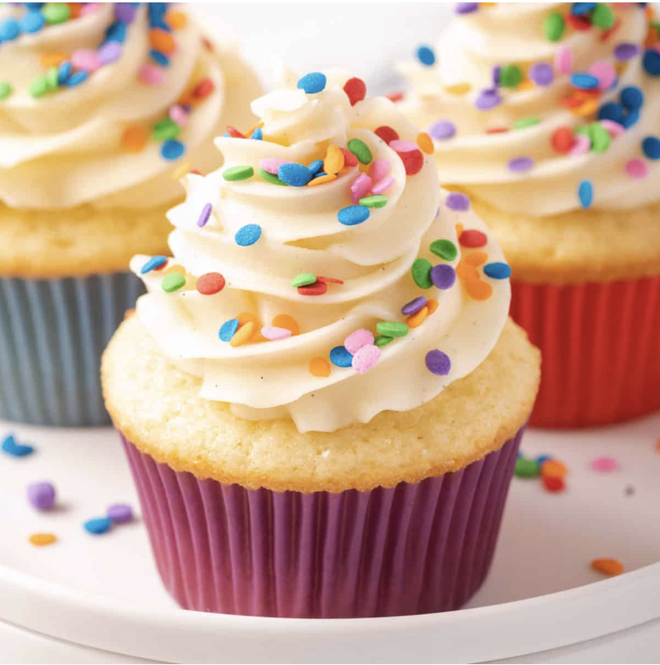

Vanilla Cupcakes!
Vanilla cupcakes are small, sweet cakes baked in individual paper liners, featuring a soft, fluffy crumb and a warm, sweet vanilla flavor!

Ingredients:
- Butter
- Vanilla
- Baking Powder
- Oil
- Milk
- Flour
- Sugar
- Salt
Instructions:
- Use a handheld beater
- Whip the eggs and sugar
- Whisk together
- Gradually add the flour mixture into the egg mixture in 3 lots
- mix for just 5 secondson Speed 1 in between
- Melt butter and heat milk
- Mix some batter into hot milk (tempering)
- Slowly pour milk mixture back into whipped eggs
- Fill cupcake liners
- Bake for 22 minutes
- ENJOY!!
Find the original recipe in this
online cookbook